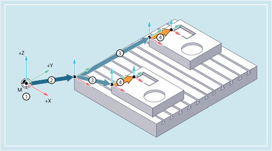

The following example should help clarify the relationships between the various coordinate systems:
① | A kinematic transformation is not active. This means that the machine coordinate system and the basic coordinate system coincide. |
② | The basic zero system (BZS) with the pallet zero are obtained from the basic offset. |
③ | The settable work offset G54 or G55 specifies the "settable zero system" (SZS) for workpiece 1 or workpiece 2 respectively. |
④ | The workpiece coordinate system (WCS) results from the programmable coordinate transformation. |